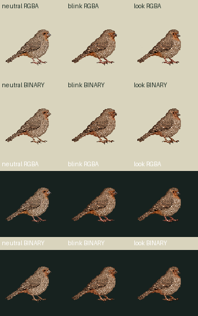
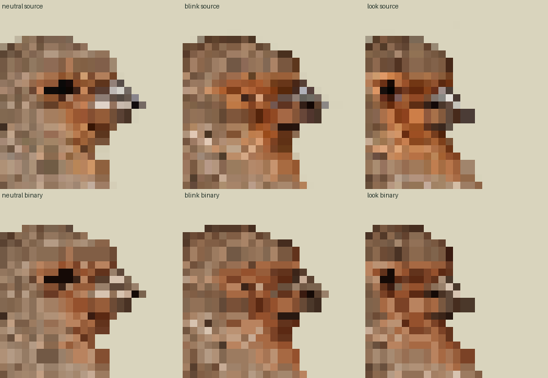
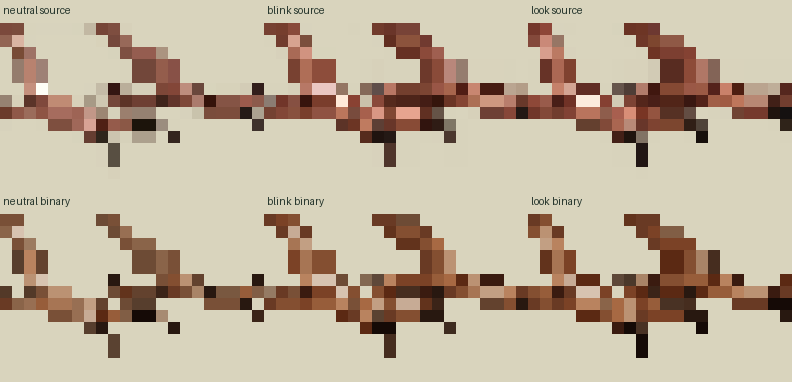

Zero image calls, new drawings or new slots. Three existing registered source identities are preserved with their exact legacy96 renders. The held hop study is excluded. The separate source112 RGBA and binary/common-palette112 proposals preserve a common canvas and individual scale.
Legacy96 at111.761world | source112 RGBA | binary/common64color112 | enlarged binary
Same whole96→112 floor-center nearest mapping for all three frames, with straight RGBA channel copying. No per-pose crop, fit, translation, snap or paint. Density1/world112 changes the old111.761194 world by+0.238806 (+0.213675%). Pivot57,75 scales to66.5,87.5 then explicitly rounds to67,88 (+.5,+.5); no pixel movement is hidden.
Idle is an explicit neutral-only42tick projection. Blink42/3/24 and look24/18/27 preserve the inherited30Hz timing and looping as separate source proposals; the original combined binding remains untouched. Overlays show technical root, foot, bill and eye regions only, with at least1pixel uncertainty. Contacts remain empty, geometryReviewed=false and supportWorld=null.



Loading…
The unchanged shared checker passed the exact pixel-normalization subset against the fresh checkpoint8 contract. Full production metadata, fidelity/pins, physical support and current Mac admission remain unaccepted. The runtime derivative uses alpha128 and one63opaqueRGB+transparent palette with no dither; original sampled RGB/alpha remain separately preserved.